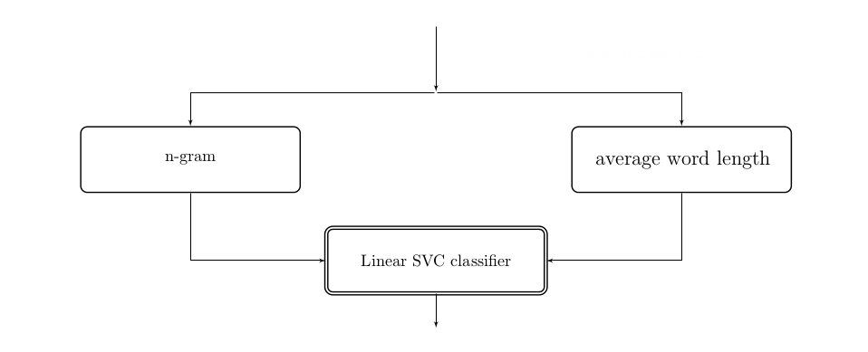

Grids, Streets & Pipelines
Building a linguistic street map with scikit-learn
Michelle Fullwood / @michelleful
Who I am
I'm a grad student in linguistics.
I love languages and maps.
I'm from Singapore.
Singapore street names

Clusters of street names

© Open Street Map contributors
Goal
A map of Singapore with streets coloured by linguistic originIngredients
- Geographic location of roads
- Linguistic classification
Ingredients
- Geographic location of roads - OpenStreetMap
- Linguistic classification
Ingredients
- Geographic location of roads - OpenStreetMap
- Linguistic classification - scikit-learn
Goals for this talk
- Classifying with scikit-learn (70%)
- Organising features with pipelines
- Improving performance by tuning hyperparameters
- Wrangling geodata with GeoPandas (30%)
- Data preparation
- Plotting a map
Wrangling geodata
OpenStreetMap Metro Extracts
GeoJSON
{ "type": "Feature",
"properties":
{ "id": 5436.0, "osm_id": 48673274.0,
"type": "residential",
"name": "Montreal Drive", ...
"class": "highway" },
"geometry":
{ "type": "LineString",
"coordinates": [ [ 103.827628075898062, 1.45001447378366 ],
[ 103.827546855256259, 1.450088485988644 ],
[ 103.82724167016174 , 1.450461983594056 ],
... ] } }
GeoPandas
>>> import geopandas as gpd
>>> df = gpd.read_file('singapore-roads.geojson')
>>> df.shape
(59218, 13)
Plotting with GeoPandas
>>> df.plot()
Geographic operations made easy
>>> # `within` function returns true if one feature
>>> # sits within the boundary of another
>>> df = df[df.geometry.within(singapore.geometry)]
>>> df.plot()

Pandas operations are still available
>>> # filter out empty road names
>>> df = df[df['name'].notnull()]
>>> # only accept roads whose 'highway' variable is
>>> # in an accepted list (not a footpath, etc)
>>> df = df[df['highway'].isin(accepted_road_types)]
Building the baseline classifier
Ingredients we need:
- Classification schema
- Labelled train/test set
- Numerical features
- A classifier
- An evaluation metric
Classification schema
- Malay
- Chinese
- English
- Indian
- Generic
- Other
Train/Test split
# split into train and test data
from sklearn.cross_validation import train_test_split
data_train, data_test, y_train, y_true = \
train_test_split(df['road_name'], df['classification'], test_size=0.2)Choosing features: n-grams
(Jalan) Malu-Malu
| unigrams | m(2) a(2) l(2) u(2) -(1) |
| bigrams | #m(1) ma(2) al(2) lu(2) u-(1) ... |
| trigrams | ##m(1) #ma(1) mal(2) alu(2) ... |
Choosing features: n-grams
Names containing bigram 'ck'| British | Chinese | Malay | Indian |
| 23 | 17 | 0 | 0 |
| Alnwick Berwick Brickson ... | Boon Teck Hock Chye Kheam Hock ... |
Choosing features: n-grams
>>> from sklearn.feature_extraction.text import CountVectorizer
>>> ngram_counter = CountVectorizer(ngram_range=(1, 4), analyzer='char')
>>> X_train = ngram_counter.fit_transform(data_train)
>>> X_test = ngram_counter.transform(data_test)
Selecting a classifier

Linear Support Vector Classification (SVC)
Linear Support Vector Classification (SVC)
Linear Support Vector Classification (SVC)
Linear Support Vector Classification (SVC)
Building the classification model
>>> from sklearn.svm import LinearSVC
>>> classifier = LinearSVC()
>>> model = classifier.fit(X_train, y_train)
Testing the classifier
>>> y_test = model.predict(X_test)
>>> sklearn.metrics.accuracy_score(y_true, y_test)
0.551818181818
Improving the classifier
- More data
- Trying other classifiers
- Adding more features
- Hyperparameter tuning
Adding features
At the end of the day, some machine learning projects succeed and some fail. What makes the difference? Easily the most important factor is the features used...This is typically where most of the effort in a machine learning project goes.- Pedro Domingos, "A Few Useful Things to Know about Machine Learning"
Features we might want to add
- Number of words
- Average length of word
- Are all the words in the dictionary?
- Is the road tag Malay? (Street, Road vs Jalan, Lorong)
Before: Feature code
>>> from sklearn.feature_extraction.text import CountVectorizer
>>> ngram_counter = CountVectorizer(ngram_range=(1, 4), analyzer='char')
>>> X_train = ngram_counter.fit_transform(data_train)
>>> X_test = ngram_counter.transform(data_test)
Pipelines

After: rewrite with pipelines
>>> from sklearn.pipeline import Pipeline
>>> ppl = Pipeline([
('ngram', CountVectorizer(ngram_range=(1, 4), analyzer='char')),
('clf', LinearSVC())
])
>>> model = ppl.fit(data_train)
>>> y_test = model.predict(data_test)
Adding a new feature
Average word length
- Longer: likely to be of British or Indian origin
- Shorter: likely to be of Chinese origin
- Need a new data transformer that takes in road names and outputs this number
Writing your own transformer class
from sklearn.base import BaseEstimator, TransformerMixin
class SampleExtractor(BaseEstimator, TransformerMixin):
def __init__(self, vars):
self.vars = vars
def transform(self, X, y=None):
return do_something_to(X, self.vars)
def fit(self, X, y=None):
return self
Writing your own transformer class
from sklearn.base import BaseEstimator, TransformerMixin
class AverageWordLengthExtractor(BaseEstimator, TransformerMixin):
"""Takes in df, extracts road name column, outputs average word length"""
def __init__(self):
pass
def average_word_length(self, name):
return np.mean([len(word) for word in name.split()])
def transform(self, X, y=None):
return X['road_name'].apply(self.average_word_length)
def fit(self, X, y=None):
return self
Putting transformers in parallel
Feature Union
from sklearn.pipeline import Pipeline, FeatureUnion
pipeline = Pipeline([
('wf', FeatureUnion([
('ng', ngram_count_pipeline), # can pass in either a pipeline
('ave', AverageWordLengthExtractor()) # or a transformer
])),
('clf', LinearSVC()) # classifier
])Additional features I tried
- Number of words
- Average length of word
- Are all the words in the dictionary?
- Is the road tag Malay? (Street, Road vs Jalan, Lorong)
Summary
- Using Pipelines and FeatureUnions does not improve performance in and of itself
- They're a great tool for organising code readably, allowing for easier experimentation
Hyperparameter tuning
Hyperparameters
>>> # When you do this:
>>> clf = LinearSVC()
>>> # You're really doing this:
>>> clf = LinearSVC(C=1.0, loss='l2', ...)
>>> # changing the values of these hyperparameters can alter performance,
>>> # sometimes quite significantly
How GridSearchCV works
| C | |||||
| 0.10 | 1.00 | 10.0 | 100 | 1000 | |
| Gamma 2-2 | |||||
| 20 | ✔ | ||||
| 22 | |||||
How GridSearchCV works
Within each cell: cross-validation Train Test| 20% | 20% | 20% | 20% | 20% |
| 20% | 20% | 20% | 20% | 20% |
| 20% | 20% | 20% | 20% | 20% |
| 20% | 20% | 20% | 20% | 20% |
| 20% | 20% | 20% | 20% | 20% |
GridSearchCV
>>> from sklearn.grid_search import GridSearchCV
>>> pg = {'clf__C': [0.1, 1, 10, 100]}
>>> grid = GridSearchCV(pipeline, param_grid=pg, cv=5)
>>> grid.fit(X_train, y_train)
>>> grid.best_params_
{'clf__C': 0.1}
>>> grid.best_score_
0.702290076336
GridSearchCV
>>> model = grid.best_estimator_.fit(X_train, y_train)
>>> y_test = model.predict(X_test)
>>> accuracy_score(y_test, y_true)
0.686590909091
Which hyperparameters?
>>> pipeline.get_params() # only works if all transformers
# inherit from BaseEstimator!
{'clf__C': 1.0,
'clf__class_weight': None,
'clf__dual': True,
...
'feats__ngram__ngram__ngram_range': (1, 4),
'feats__ngram__ngram__preprocessor': None,
'feats__ngram__ngram__stop_words': None,
}
What parameter grid?
- Understanding the classification algorithm
What parameter grid?
- Understanding the classification algorithm
What parameter grid?
- Understanding the classification algorithm
What parameter grid?
- Two empirical survey papers:
- Caruana & Niculescu-Mizil (2006) An Empirical Comparison of Supervised Learning Algorithms
- Fernandez-Delgado et al (2014) Do we Need Hundreds of Classifiers to Solve Real World Classification Problems?
What parameter grid?
- Searching on Github
Effects of hyperparameter tuning
Making the map
(In two lines of Python)
Step 1
Create a matplotlib map with GeoPandas:>>> ax = df.plot(column='classification', colormap='accent')
Step 2
Convert it into an interactive Leaflet web map>>> import mplleaflet
>>> mplleaflet.display(fig=ax.figure, crs=df.crs, tiles='cartodb_positron')
Acknowledgments & Useful Resources
- Jake Wasserman (GeoPandas, mplleaflet)
- Zac Stewart on Pipelines
- Savage & Yeoh, Singapore Street Names: A Study of Toponymics